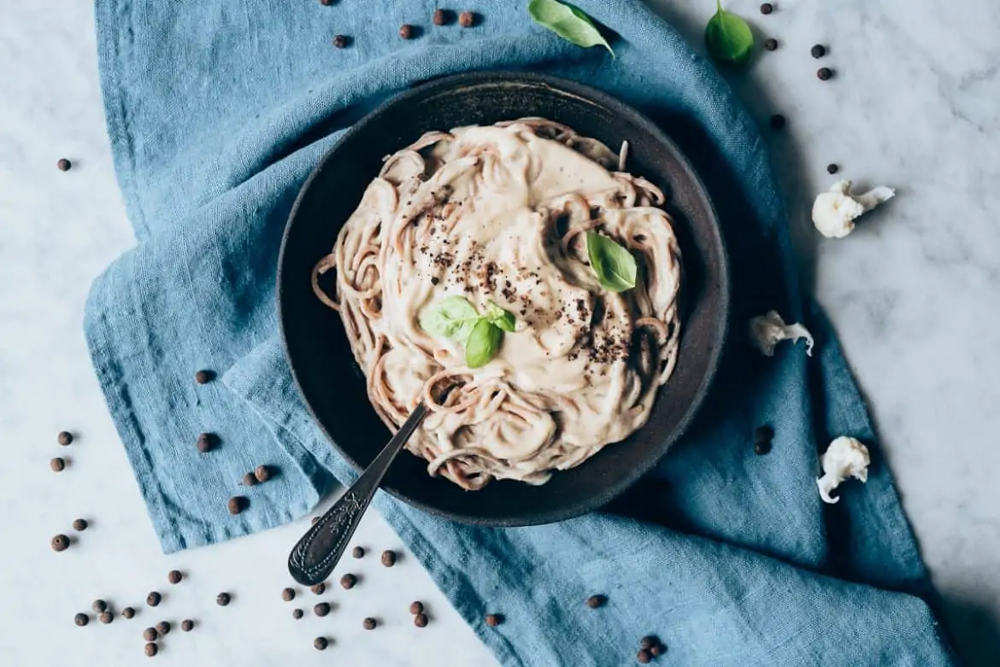
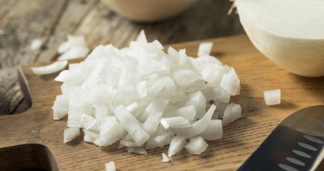
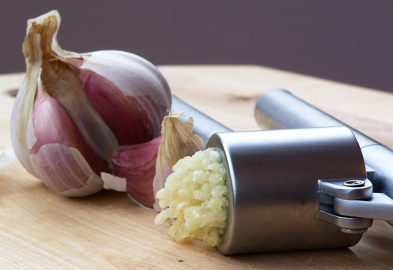
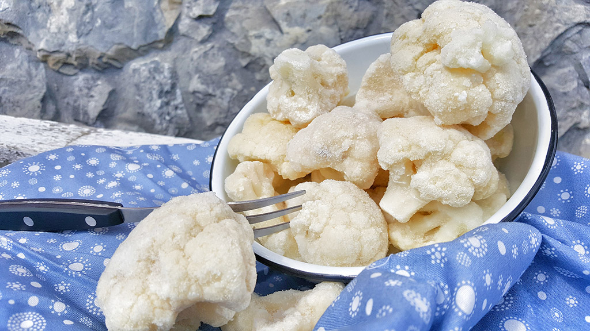

Pasta con salsa de coliflor y pimienta de Jamaica
Por Delicias Kitchen
13 marzo, 2019

Aliños y Salsas
Platos principales
Sin gluten
Veganas
Vegetarianas
Hoy te propongo una deliciosa pasta con salsa de coliflor y pimienta de Jamaica, un plato completamente vegetal y saludable, que yo he preparado con
pasta integral de espelta, pero que tú puedes preparar con tu pasta favorita… porque esta salsa combina con cualquiera!
Siempre es bueno tener alternativas sabrosas y distintas para poder variar nuestros platos de pasta, y aunque cada un@ tenemos nuestra salsa favorita para acompañarla,
nunca está de más tener otras alternativas y atrevernos de vez en cuando con sabores y recetas nuevas.

Wiki
Propiedades de la coliflor
El ingrediente principal de esta receta es la coliflor, una hortaliza que pertenece a la familia de las crucíferas y como ya te expliqué en la
coliflor a la cúrcuma,
destaca por un alto contenido en elementos fitoquímicos (entre ellos los compuestos azufrados, responsables del fuerte olor que desprende durante su cocción).
Esos compuestos le aportan un potente efecto preventivo en diversos tipos de cáncer. La coliflor tiene una cantidad importante de fibra, y es una hortaliza con un bajo aporte calórico, al no contener ni hidratos de carbono ni grasas.
Es una buena fuente de vitaminas, entre las que destaca la C y diferentes vitaminas del grupo B. Contiene ácido fólico y minerales como el potasio, el fósforo, el calcio y el magnesio.
Otros ingredientes de la receta
Como es una receta vegana, el ligero sabor a queso se lo aporta el toque de levadura nutricional, un ingrediente fantástico, muy nutritivo, y que además engancha mucho de lo rico que está, jijiji! Puedes ver sus propiedades en este riquísimo parmesano vegano o en la del delicioso pesto rojo
Como toque especial he utilizado pimienta de Jamaica, una pimienta con un grano mucho más gordo que la que todos conocemos y que le aporta un aroma y sabor muy especiales. Si no tienes o no la puedes encontrar fácilmente, puedes utilizar pimienta negra recién molida en su lugar, ya que no es un ingrediente imprescindible.

Material utilizado en la receta
Y en este post quiero aprovechar para contarte que esta salsa tan rica, con esa textura tan cremosa la he preparado con mi Vitamix , la batidora de alta potencia que compré hace ya unos años y con la que no puedo estar más contenta, ya que microtritura los alimentos y deja todas las preparaciones con un resultado increíblemente fino.
Y aprovecho para recordarte que en Conasi, donde yo la compré, tienes un código de descuento para que los lectores de mi blog se puedan beneficiar de un 5% de descuento en cualquier artículo de su tienda online. Aquí te lo vuelvo a dejar por si te interesa, solo tienes que introducirlo en el espacio donde te pide un código promocional o de descuento: CNS-DELICIAS.
Receta de pasta con salsa de coliflor y pimienta de Jamaica
- 4 cucharadas de aceite de oliva virgen extra
- 1 cebolla hermosa
- 4 dientes de ajo
- 500g de coliflor
- 2 tazas de caldo vegetal
- 2 cucharadas de levadura nutricional
- ½ taza de leche de almendras
- sal
Ingredientes
- 🕓 Preparación: 10 min
- 🕓 Cocción: 15 min
- 🕓 Total: 25 min
- 🍴 Raciones: 2
- 1. Picaremos bien fina la cebolla y la sofreiremos en el aceite hasta que esté translúcida. 
- 2. Añadiremos entonces los ajos prensados o picados finos. Sofreiremos medio minuto más. 
- 3. Incorporaremos la coliflor troceada o separada en flores, el caldo y dejaremos cocer hasta que esté tierna, seguramente se consumirá gran parte del líquido. 
- 4. Echaremos la preparación en el vaso de la Vitamix y añadiremos la leche, la levadura, los granos de pimienta y un poco de sal al gusto. Batiremos hasta conseguir una textura fina.
- 5. Una vez esté bien batida, utilizaremos esta salsa para acompañar cualquier plato de pasta.